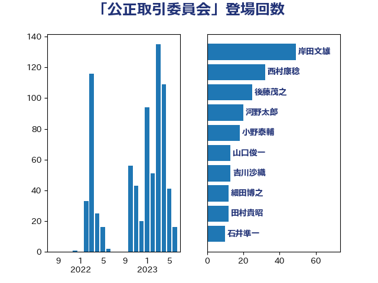

単語「公正取引委員会」

| 岸田文雄 | 自由民主党 | 49 回 |
| 西村康稔 | 自由民主党 | 32 回 |
| 後藤茂之 | 自由民主党 | 25 回 |
| 河野太郎 | 自由民主党 | 20 回 |
| 小野泰輔 | 日本維新の会 | 18 回 |
| 山口俊一 | 自由民主党 | 13 回 |
| 吉川沙織 | 立憲民主党 | 13 回 |
| 細田博之 | 自由民主党 | 12 回 |
| 田村貴昭 | 日本共産党 | 12 回 |
| 石井準一 | 自由民主党 | 10 回 |
| 石橋通宏 | 立憲民主党 | 9 回 |
| 川田龍平 | 立憲民主党 | 9 回 |
| 落合貴之 | 立憲民主党 | 8 回 |
| 竹内譲 | 公明党 | 8 回 |
| 田村まみ | 国民民主党 | 8 回 |
| 田中健 | 国民民主党 | 8 回 |
| 若宮健嗣 | 自由民主党 | 7 回 |
| 永岡桂子 | 自由民主党 | 7 回 |
| 柴田巧 | 日本維新の会 | 6 回 |
| 山際大志郎 | 自由民主党 | 6 回 |
| 大島敦 | 立憲民主党 | 6 回 |
| 里見隆治 | 公明党 | 5 回 |
| 笠井亮 | 日本共産党 | 5 回 |
| 池畑浩太朗 | 日本維新の会 | 5 回 |
| 柴愼一 | 立憲民主党 | 5 回 |
| 松野博一 | 自由民主党 | 5 回 |
| 岩渕友 | 日本共産党 | 5 回 |
| 塩崎彰久 | 自由民主党 | 5 回 |
| 鈴木俊一 | 自由民主党 | 4 回 |
| 赤池誠章 | 自由民主党 | 4 回 |
| 西田実仁 | 公明党 | 4 回 |
| 福岡資麿 | 自由民主党 | 4 回 |
| 矢倉克夫 | 公明党 | 4 回 |
| 田島麻衣子 | 立憲民主党 | 4 回 |
| 浜野喜史 | 国民民主党 | 4 回 |
| 浜口誠 | 国民民主党 | 4 回 |
| 柳ヶ瀬裕文 | 日本維新の会 | 4 回 |
| 東徹 | 日本維新の会 | 4 回 |
| 山東昭子 | 自由民主党 | 4 回 |
| 尾辻秀久 | 無所属 | 4 回 |
| 小森卓郎 | 自由民主党 | 4 回 |
| 大串正樹 | 自由民主党 | 4 回 |
| 塚田一郎 | 自由民主党 | 4 回 |
| 勝部賢志 | 立憲民主党 | 4 回 |
| 足立康史 | 日本維新の会 | 3 回 |
| 萩生田光一 | 自由民主党 | 3 回 |
| 福田昭夫 | 立憲民主党 | 3 回 |
| 石川博崇 | 公明党 | 3 回 |
| 牧島かれん | 自由民主党 | 3 回 |
| 森本真治 | 立憲民主党 | 3 回 |
| 塩田博昭 | 公明党 | 3 回 |
| 古屋範子 | 公明党 | 3 回 |
| 上田清司 | 国民民主党 | 3 回 |
| 三浦信祐 | 公明党 | 3 回 |
| 道下大樹 | 立憲民主党 | 2 回 |
| 石井正弘 | 自由民主党 | 2 回 |
| 浦野靖人 | 日本維新の会 | 2 回 |
| 浅野哲 | 国民民主党 | 2 回 |
| 沢田良 | 日本維新の会 | 2 回 |
| 村田享子 | 立憲民主党 | 2 回 |
| 斎藤アレックス | 国民民主党 | 2 回 |
| 山添拓 | 日本共産党 | 2 回 |
| 尾崎正直 | 自由民主党 | 2 回 |
| 宮路拓馬 | 自由民主党 | 2 回 |
| 太田房江 | 自由民主党 | 2 回 |
| 土田慎 | 自由民主党 | 2 回 |
| 吉川元 | 立憲民主党 | 2 回 |
| 倉林明子 | 日本共産党 | 2 回 |
| 伊藤孝恵 | 国民民主党 | 2 回 |
| 伊東良孝 | 自由民主党 | 2 回 |
| 井坂信彦 | 立憲民主党 | 2 回 |
| 井上哲士 | 日本共産党 | 2 回 |
| 中谷一馬 | 立憲民主党 | 2 回 |
| 高木かおり | 日本維新の会 | 1 回 |
| 長峯誠 | 自由民主党 | 1 回 |
| 鈴木義弘 | 国民民主党 | 1 回 |
| 金子恭之 | 自由民主党 | 1 回 |
| 近藤和也 | 立憲民主党 | 1 回 |
| 赤羽一嘉 | 公明党 | 1 回 |
| 赤松健 | 自由民主党 | 1 回 |
| 藤丸敏 | 自由民主党 | 1 回 |
| 菊田真紀子 | 立憲民主党 | 1 回 |
| 舟山康江 | 国民民主党 | 1 回 |
| 紙智子 | 日本共産党 | 1 回 |
| 竹詰仁 | 国民民主党 | 1 回 |
| 窪田哲也 | 公明党 | 1 回 |
| 稲田朋美 | 自由民主党 | 1 回 |
| 稲富修二 | 立憲民主党 | 1 回 |
| 福重隆浩 | 公明党 | 1 回 |
| 神津たけし | 立憲民主党 | 1 回 |
| 石田昌宏 | 自由民主党 | 1 回 |
| 石井章 | 日本維新の会 | 1 回 |
| 盛山正仁 | 自由民主党 | 1 回 |
| 清水貴之 | 日本維新の会 | 1 回 |
| 浅田均 | 日本維新の会 | 1 回 |
| 河野義博 | 公明党 | 1 回 |
| 河西宏一 | 公明党 | 1 回 |
| 江田憲司 | 立憲民主党 | 1 回 |
| 橋本岳 | 自由民主党 | 1 回 |
| 横山信一 | 公明党 | 1 回 |
| 根本匠 | 自由民主党 | 1 回 |
| 枝野幸男 | 立憲民主党 | 1 回 |
| 松沢成文 | 日本維新の会 | 1 回 |
| 本村伸子 | 日本共産党 | 1 回 |
| 木原誠二 | 自由民主党 | 1 回 |
| 徳永エリ | 立憲民主党 | 1 回 |
| 岬麻紀 | 日本維新の会 | 1 回 |
| 小沼巧 | 立憲民主党 | 1 回 |
| 小池晃 | 日本共産党 | 1 回 |
| 宮下一郎 | 自由民主党 | 1 回 |
| 塩川鉄也 | 日本共産党 | 1 回 |
| 堤かなめ | 立憲民主党 | 1 回 |
| 和田義明 | 自由民主党 | 1 回 |
| 加藤勝信 | 自由民主党 | 1 回 |
| 伊藤渉 | 公明党 | 1 回 |
| 上田勇 | 公明党 | 1 回 |
| 三ッ林裕巳 | 自由民主党 | 1 回 |
| たがや亮 | れいわ新選組 | 1 回 |